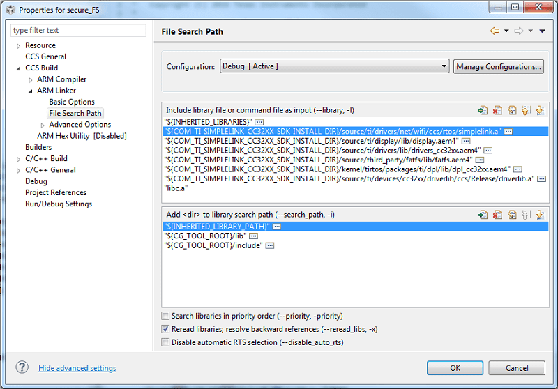
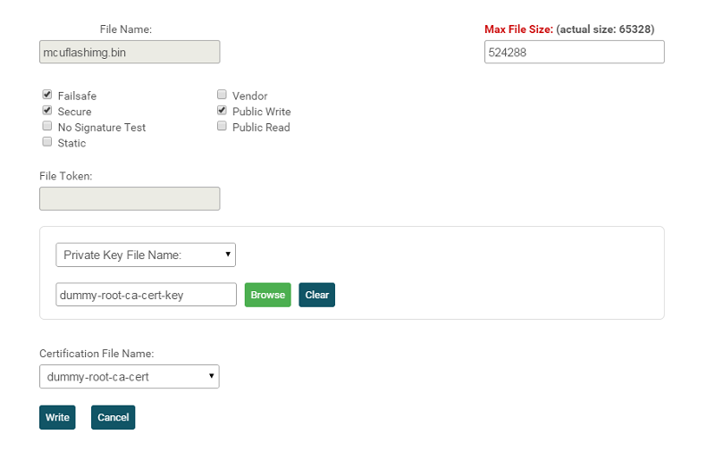

Introduction
In this lab, we are going to add HTTP server functionality to the Portable project so users can read the temperature from a webpage hosted by the SimpleLink™ Wi-Fi® CC3220 device.
The purpose of this lab is to demonstrate the portability of SimpleLink MCU Platform. The Portable project exists as a common example across all platforms, and we can implement Wi-Fi functionality by adding functions to this baseline example.
Prerequisites
Recommended Reading
- SimpleLink Wi-Fi CC3220 Getting Started Guide
- SimpleLink Wi-Fi CC3120 and CC3220 Network Processor Programmer's Guide Section 9: HTTP Server
Software
- Code Composer Studio v7.4 or later
- Must have SimpleLink CC3x Wireless MCU support
- Make sure that CCS is using the latest updates: Help → Check for Updates
- CC3220 SDK v1.60.00.04 or later
- UniFlash v4.2.1.15 or later.
Hardware
- SimpleLink Wi-Fi CC3220SF LaunchPad (CC3220SF-LAUNCHXL) OR CC3220S LaunchPad (CC3220S-LAUNCHXL)
Task 1: Import the Portable example
- In CCS, open the TI Resource Explorer (View → Resource Explorer)
Expand the folders as shown to select the Portable example, then click the Import to IDE icon at the top-right
- Be sure you select your desired project "flavor" (CC3220S-LAUNCHXL, CC3220SF-LAUNCHXL, TI-RTOS, Free-RTOS, CCS, GCC, etc)
We will be using the TI-RTOS CCS example for this lab:
portable_CC3220SF_LAUNCHXL_tirtos_ccs
Test out the Portable example!
Start a debug session in CCS and open a terminal to test the Portable example functionality. It uses the on-board sensor to report temperature via the terminal. Please see the
README.htmlin the Portable project for more details.
You will also need to download some additional files for later in the lab. In Resource Explorer, you can find these files as shown. Click the Download and Install icon at the top right. This should install
simplelink_academy_cc32xxsdk_x_xx_xx_xxto yourtifolder.- The path to the required files is:
simplelink_academy_cc32xxsdk_x_xx_xx_xx/modules/projects/wifi_portable These files include a source and header file for the HTTP server code and a source and header file that allows us to print to the terminal via UART. There are also ZIP files which are the UniFlash ImageCreator project sessions for S and SF devices.
ZIP files
Do not unzip these files. We will need these later in ZIP format in order to program the device. The ZIP contains database files for UniFlash ImageCreator tool.
- The path to the required files is:
Task 2: Set up the Portable example for Wi-Fi
Right-click on the Portable project name and select Properties → Build → ARM Linker → File Search Path
Click the document icon with the green plus next to "Include library file..."
Browse to your SimpleLink CC3220 SDK installation, then
source/ti/drivers/net/wifi/ccs/rtos/and selectsimplelink.a. Select OK. This is the pre-built SimpleLink Wi-Fi library.Add the provided
uart_term.handuart_term.cfiles to your Portable project. This code allows us to print format specifiers to the UART terminal. You can download these files from the project folder in Resource Explorer or copy them from another CC3220 example. Please see Task 1, Step 3 of this training.
Task 3: Add the event handlers for the HTTP Server
More information on HTTP servers
If you are unfamiliar with the topic of HTTP servers, please see the Recommended Reading in the Prerequisites section above.
Add the provided
httpserver.candhttpserver.hfiles to your Portable project. You can download these files from the project folder in Resource Explorer. Please see Task 1, Step 3 of this training.These files contain a shell for the HTTP server functionality. We are going to add to these files to finish the implementation.
Open
httpserver.cand scroll down to the Callback Functions section (~line 430)What are event handlers?
Asynchronous events can be sent by the network processor to the host at any given time with an indication of specific states and specific data for each event. To listen to these events and determine the needed information, a handler must be implemented in the user application and registered under the user.h header file.
Take a look at the event handlers added for you:
SimpleLinkWlanEventHandler(): Handles all incoming WLAN events by updating our control block for use elsewhere in the application. An example of a WLAN event is a station (such as your mobile device) connecting to our Access Point (CC3220 LaunchPad).SimpleLinkFatalErrorEventHandler(): Alerts the user to a fatal error passed by the network processor.SimpleLinkNetAppEventHandler(): Handles network events such as IP acquired, IP leased, IP released, etc.SimpleLinkNetAppRequestEventHandler(): Handles all NetApp requests. It prepares incoming requests and passes them to the message queue we use in the HTTP server thread. This callback is required for the functionality of the HTTP server.No action needed for this task
You can move on to task 4 once you are familair with the event handlers.
Task 4: Customize the HTTP Server
How to write the temperature GET callback to display the data from the temperature sensor
Go to the
TODOintempGetCallback()inhttpserver.c. We will have to implement the cases of displaying the temperature in Celsius or Fahrenheit.We will be using the enum
TempIdx(found inhttpserver.h) as our cases. You can read from the temperature sensor by using the functionstemperatureCandtemperatureF. An existing example of this is inconsole.c.case TempIdx_C: pthread_mutex_lock(&temperatureMutex); value = (int)temperatureC; pthread_mutex_unlock(&temperatureMutex); break; case TempIdx_F: pthread_mutex_lock(&temperatureMutex); value = (int)temperatureF; pthread_mutex_unlock(&temperatureMutex); break;httpserver.c :: tempGetCallBack()
How to write the light POST callback to control the on-board LED
- Go to the
TODOinlightPostCallback(). We will have to implement the cases of the red LED state. We will be using the enum
LedValues(found inhttpserver.h) as our cases.case LedValues_Off: ledState = Board_LED_OFF; break; case LedValues_On: ledState = Board_LED_ON; break;httpserver.c :: lightPostCallBack()
Light GET Callback
Additionally, there is also a light GET callback in httpserver.c, which is used
to check the status of the on-board LED when the webpage is loaded. This makes
sure the webpage is in sync with the server throughout the demo.
Update the HTTP requests
We need to update the
httpRequestobject to recognize the call requests from our HTML webpage. Find theTODOin the global variables section ofhttpserver.cand set up three indexes in the format:{i, SL_NETAPP_REQUEST_HTTP_X, "/<call>", {{NULL}}, NULL},- Index 0 will be our
HTTP_GETrequest for "/light" - Index 1 will be our
HTTP_POSTrequest for "/light" Index 2 will be our
HTTP_GETrequest for "/temp"{0, SL_NETAPP_REQUEST_HTTP_GET, "/light", {{NULL}}, NULL}, {1, SL_NETAPP_REQUEST_HTTP_POST, "/light", {{NULL}}, NULL}, {2, SL_NETAPP_REQUEST_HTTP_GET, "/temp", {{NULL}}, NULL},httpserver.c :: httpRequest
- Index 0 will be our
Now we will update the HTTP server database to define the HTTP request characteristics and callbacks. Find the
TODOin the functioninitHttpserverDB()ofhttpserver.c. Our HTTP request characteristic and value formats are:httpRequest[i].charValues[i].characteristic = "<characteristic>";
and
httpRequest[i].charValues[i].value[i] = "<value>";- The temp characteristics we are defining are
tempcandtempf - The light values we are defining are
onandofffor theredledcharacteristic Our HTTP request callback format is
httpRequest[i].serviceCallback = <callback>;. We will use our callbacks as implemented earlier:tempGetCallback,lightPostCallback, andlightGetCallbackhttpRequest[0].charValues[0].characteristic = "redled"; httpRequest[0].charValues[0].value[0] = "off"; httpRequest[0].charValues[0].value[1] = "on"; httpRequest[0].charValues[0].value[2] = "toggle"; httpRequest[0].serviceCallback = lightGetCallback; httpRequest[1].charValues[0].characteristic = "redled"; httpRequest[1].charValues[0].value[0] = "off"; httpRequest[1].charValues[0].value[1] = "on"; httpRequest[1].charValues[0].value[2] = "toggle"; httpRequest[1].serviceCallback = lightPostCallback; httpRequest[2].charValues[0].characteristic = "tempc"; httpRequest[2].charValues[1].characteristic = "tempf"; httpRequest[2].serviceCallback = tempGetCallback;httpserver.c :: initHttpserverDB()
- The temp characteristics we are defining are
HTTP Server debug messages
If you are interested in seeing all of the details of the HTTP server printed to
your UART terminal, define HTTP_DEBUG_PRINT in line 43 of httpserver.h
Task 5: Start the HTTP Server
Scroll down to the bottom of
httpserver.cand take a look athttpserverThread(). This is the bulk of the HTTP server thread.httpserverThread()initializes the CC3220 LaunchPad as an HTTP server and starts the device in Access Point mode.ConfigureSimpleLinkToDefaultState()configures the device in AP mode and sets the HTTP server.- This thread also initializes the message queue used by the
NetAppRequestcallback as well as the database we updated earlier. - The main while loop of this thread receives messages from the queue, and then passes the requests to the appropriate HTTP handlers (get, put, post, delete).
Go to
temperature.c, and comment out theGPIO_writecalls in the functionssendAlert()andclearAlert().Stop! Do not skip step 2!
The current implementation of Portable uses the same LED we are controlling in this exercise and causes a conflict. If you do not comment out these lines, your LED may not work as expected.
Task 6: Add TI-RTOS threads
Our last software edit is to update the main_tirtos.c for Wi-Fi functionality.
This includes adding threads for our HTTP server and a SimpleLink Wi-Fi task
that is required to use the network processor API.
We need to include the SimpleLink and Board header files as well as the UART terminal header file at the top of
main_tirtos.cin order to use the LaunchPad's terminal output commands.#include <ti/drivers/net/wifi/simplelink.h> #include <uart_term.h>main_tirtos.c - Included files
Below the includes, we can declare the
httpserverThread()the same way the temperature and console threads are declared and define the new stack sizes.extern void *httpserverThread(void *arg0); #define HTTP_STACK_SIZE (3072) #define SL_TASK_STACK_SIZE (2048)main_tirtos.c
Within the
main()function, we add the definition forspawnThreadand its attribute.pthread_t spawnThread; pthread_attr_t attrs_spawn;main_tirtos.c :: main()
Below that, initialize the SPI and the UART terminal. This should go after the existing
Board_initGeneral();SPI_init(); InitTerm();main_tirtos.c :: main()
Next, we will comment out the creation of the
consoleThreadinmain(). This thread conflicts with our use of the UART terminal. Remember, we are instead using the HTTP Server to host a webpage to provide us with the temperature readings./* Console thread */ // retc = pthread_create(&thread, &attrs, consoleThread, NULL); // if (retc != 0) { // /* pthread_create() failed */ // while (1); // }main_tirtos.c :: main()
Stop! Do not skip step 5!
The console thread attempts to open a conflicting UART terminal which may cause the example to hang while trying to run the console.
The first thread that we will create is the SimpleLink Wi-Fi thread. This is important because we need
sl_Task()to begin running first in order to handle any of asynchronous events raised by the network processor as a result of NWP API calls. We will set this task as priority 9 so it is always the highest priority thread will run before any other threads. This goes in themain()function and can be placed below the creation of the temperature mutex./* create the sl_Task */ pthread_attr_init(&attrs_spawn); priParam.sched_priority = 9; retc = pthread_attr_setschedparam(&attrs_spawn, &priParam); retc |= pthread_attr_setstacksize(&attrs_spawn, SL_TASK_STACK_SIZE); retc = pthread_create(&spawnThread, &attrs_spawn, sl_Task, NULL); if(retc) { /* Handle Error */ UART_PRINT("Unable to create sl_Task thread \n"); while(1); }main_tirtos.c :: main()
Finally, add the HTTP server thread below the
sl_Taskthread in themain()function. We will set this thread as priority 3 so it is slightly higher priority than the temperature thread./* HTTP Server thread */ priParam.sched_priority = 3; pthread_attr_setschedparam(&attrs, &priParam); retc |= pthread_attr_setstacksize(&attrs, HTTP_STACK_SIZE); retc = pthread_create(&thread, &attrs, httpserverThread, NULL); if (retc != 0) { /* pthread_create() failed */ while (1); }main_tirtos.c :: main()
Important: This snippet of code must be after the
pthread_attr_setschedparam(&attrs, &priParam);earlier on inmain()since we are usingattrsandpriParamhere.Rebuild the project!
Task 7: Program the device
Download the provided UniFlash zip package
Portable_Wifi.zipfrom the Resource Explorer project folder, which includes a demo HTML page titledportable.html(see task 1, step 3). User files are stored on the serial flash. The HTML page will be hosted by the NWP when the HTTP server is started.Using UniFlash ImageCreator
For additional information on any of the following UniFlash ImageCreator steps, please see the SimpleLink Wi-Fi CC3220 Getting Started Guide!
Start UniFlash, select the CC3120/CC3220 device as shown, and select Start ImageCreator.
Select Manage Projects. Click the Import Project from ZIP file button, and browse for the
Portable_Wifi.zipyou downloaded earlier. Be surePortable_Wifiis highlighted in the Available Projects list, and click Open Selected Project.Select User Files in the left-hand menu as shown. You should see the following user files, including
portable.html.In the Actions menu, Select MCU Image, then click Browse.
Browse to the
.binwe built earlier and open. This will be in your CCS workspace in the project's Debug folder. If you have not made any changes to the default project name, this will be/ti/workspace_v7/portable_CC3220SF_LAUNCHXL_tirtos_ccs/Debug/portable_CC3220SF_LAUNCHXL_tirtos_ccs.bin. You will see the following screen:Next, we will need add the Private Key File that signs the MCU Image. We saw in the User Files that we have the
dummy-root-ca-certalready loaded in this ImageCreator project. The key for this Root CA is provided in the certificate playground in the SimpleLink CC3220 SDK. Browse to/ti/simplelink_cc32xx_sdk_x_xx_xx_xx/tools/cc32xx_tools/certificate_playground/dummy-root-ca-cert-keyand open.Below, select the
dummy-root-ca-certas the Certification File Name. Once your completed screen looks like the one below, press Write.You can see the
mcuflashimg.binwas added! Now, select Generate Image on the right-hand menu.Select Connect to initiate the connection with your LaunchPad (anything holding the device COM port, such as a terminal window, will need to be closed). Then, select Program Image.
Task 8: Test the demo!
Open up a terminal on your device's COM port and reset the LaunchPad. We want to use the XSD110 Class Application/User UART port with the following parameters:
UART Configuration
Baud rate: 115200
Data: 8 bit
Parity: None
Stop: 1 bit
Flow control: NoneConnect to the AP broadcasted by your device. The name of this AP will be simplelink- followed by the last 6 digits of your MAC address.
Open up a browser and type in the URL
mysimplelink.net/portable.htmlto test the demo.
Find your MAC address
Each SimpleLink Wi-Fi device has its own unique MAC address. You can see this in UniFlash ImageCreator when you are connected to the device.
Technical support
For any questions, please search on the TI SimpleLink Wi-Fi E2E Forum
This work is licensed under a Creative Commons Attribution-NonCommercial-NoDerivatives 4.0 International License.